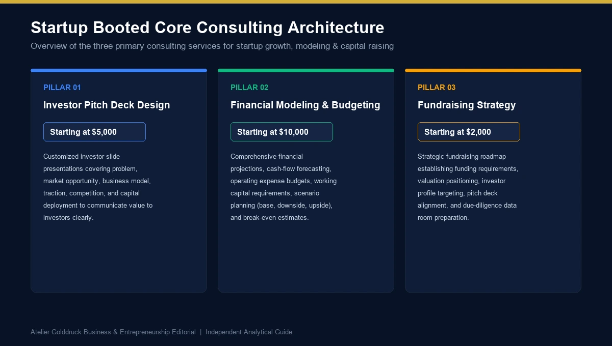
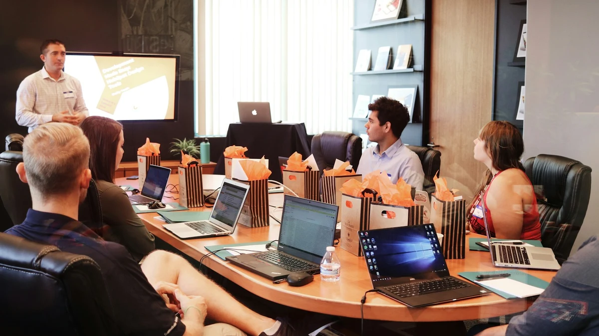

Startup booted is a search term associated with StartupBooted, a website that offers startup consulting services, business growth resources, investor pitch deck design, financial modeling, budgeting, and fundraising strategy. If you are preparing to launch a company, seeking investment, or trying to build a stronger financial plan, you may be wondering what StartupBooted offers and whether its services match your business needs.
Building a startup requires more than a promising idea. Founders need to understand their target market, demonstrate customer demand, manage cash flow, create realistic financial projections, and communicate their business opportunity clearly to potential investors.
This is where professional startup support can become useful. A well-structured investor pitch deck helps explain the business opportunity, while a realistic financial model shows how the company expects to earn revenue, control costs, and use its capital. A fundraising strategy connects these elements with the right funding approach.
StartupBooted's official website highlights three main service areas: pitch deck design, financial modeling and budgeting, and fundraising strategy. It also publishes educational articles about entrepreneurship, finance, business operations, and startup growth.
This guide explains what Startup Booted is, how its services work, the publicly displayed starting prices, who may benefit from them, and what founders should evaluate before purchasing professional startup consulting.
What Is Startup Booted?
Startup Booted refers primarily to StartupBooted.com, a website focused on startup consulting, business growth, and resources for entrepreneurs.
The website presents itself as a service provider that helps founders prepare investor presentations, develop financial models, improve budgeting, and plan fundraising activities.
These services address different stages of a startup's development.
An early-stage founder may need help explaining a business idea to potential investors. A company with paying customers may need financial projections to understand its future capital requirements. Another startup may already have a pitch deck but need a more organized fundraising plan.
StartupBooted positions its services around these business needs rather than offering a single solution for every company.
The website also provides educational articles that explore startup funding, entrepreneurship, financial planning, investor communication, and other business topics.
It is useful to distinguish between the platform's consulting services and its educational content. Reading a startup funding guide does not automatically mean you are receiving financial consulting, and purchasing a pitch deck design service does not guarantee that an investor will finance your business.
The value of any engagement depends on the quality of the work, the information provided by the founder, and how well the service addresses the company's actual requirements.
Startup Booted Services: What Does the Website Offer?
The official website organizes its main consulting services around three areas: investor pitch decks, financial modeling and budgeting, and fundraising strategy.

1. Startup Booted Investor Pitch Deck Design
An investor pitch deck is a presentation that explains a company's business opportunity to potential investors.
A typical pitch deck describes the problem the company solves, its product or service, its target market, its business model, its traction, and its plans for growth.
StartupBooted advertises customized pitch deck design intended to help founders present their businesses more clearly and professionally.
A useful pitch deck should do more than look attractive. It should help an investor quickly understand why the business matters, how it can grow, and what evidence supports the opportunity.
A strong presentation generally addresses:
- Problem and solution: What customer problem exists, and how does the startup solve it?
- Market opportunity: Who are the potential customers, and how large is the realistic target market?
- Product or service: What is being offered, and why is it different?
- Business model: How will the company generate revenue?
- Traction: What evidence demonstrates customer demand?
- Competition: Which alternatives already exist, and what makes the startup different?
- Financial outlook: What revenue, costs, and growth assumptions underpin the plan?
- Funding requirement: How much capital is sought, and how will it be used?
The strength of the presentation depends on the substance behind these slides. Attractive graphics cannot compensate for unrealistic financial projections or an unclear business model.
2. Startup Booted Financial Modeling and Budgeting
Financial modeling helps founders understand how their business may perform under different conditions.
A financial model connects assumptions about revenue, pricing, customers, expenses, hiring, and investment with the company's projected financial results.
StartupBooted advertises financial modeling and budgeting services designed to help businesses plan resource allocation, evaluate financial scenarios, and prepare for future decisions.
These services may be particularly relevant when a startup is preparing for fundraising, considering a major hire, expanding into a new market, or trying to understand how much runway remains.
A useful startup financial model typically includes:
- Revenue forecasts based on customer numbers, pricing, and sales activity.
- Fixed and variable operating expenses.
- Hiring plans and employee costs.
- Cash-flow projections and working capital requirements.
- Profitability and break-even estimates.
- Funding requirements and the expected use of capital.
- Best-case, base-case, and downside scenarios.
For example, a software company might forecast revenue using its expected number of paying customers and average subscription price. The model would also account for software infrastructure, salaries, marketing expenses, customer cancellations, and collection timing.
This approach is more useful than simply multiplying an estimated market size by an ambitious market-share percentage.
The objective is to create a model that helps management make decisions, not merely a spreadsheet that makes the business appear attractive to investors.
3. Startup Booted Fundraising Strategy
Fundraising strategy is another core service promoted by StartupBooted.
Raising capital involves more than contacting investors and sending a presentation. Founders need to determine how much money they require, identify suitable investors, prepare supporting documents, and explain what the funding is expected to achieve.
StartupBooted's fundraising service describes a founder-led approach emphasizing business positioning, investor-ready communication, and targeted outreach.
For a startup, a clear fundraising strategy should answer several important questions:
- Why is the company raising capital now?
- How much money is required?
- What business activities will the funding support?
- Which milestones should be achieved with the investment?
- Which investor types are appropriate for the company?
- What evidence demonstrates that the opportunity is commercially viable?
- What happens if the fundraising process takes longer than expected?
A realistic fundraising plan connects these questions with the company's financial position and business objectives.
Founders should also understand that fundraising outcomes depend on investor appetite, market conditions, company performance, valuation, competition, and many other factors. Professional preparation can improve clarity and readiness, but it cannot guarantee investment.
Startup Booted Pricing: How Much Do the Services Cost?
One of the most practical questions founders ask is how much professional pitch deck design, financial modeling, and fundraising support will cost.
StartupBooted's official service pages displayed the following starting prices when reviewed. These are published starting prices rather than universal quotes for every project.
| Service | Displayed Starting Price | Main Purpose |
|---|---|---|
| Investor Pitch Deck Design | $5,000 | Preparing a customized investor presentation |
| Financial Modeling and Budgeting | $10,000 | Developing financial projections, budgets, and scenario analysis |
| Fundraising Strategy | $2,000 | Structuring fundraising plans and investor positioning |
These prices should be verified directly with StartupBooted before making a decision because service packages, availability, and pricing can change.
The final cost may depend on the startup's stage, complexity, existing documentation, required deliverables, and level of support.
For example, a company with reliable financial statements and clearly defined assumptions may need a different engagement from a startup that has not yet validated its business model.
Before paying for a service, ask for a written scope of work explaining exactly what is included, what information you must supply, how revisions are handled, and what happens if the project requirements change.
How Should Founders Evaluate the Cost?
Price alone does not determine whether a consulting service is worthwhile.
A lower-priced presentation may be sufficient for a founder who already understands the business and only needs help with visual communication. A more involved engagement may be appropriate when the company needs its assumptions reviewed, financial statements organized, and investor materials aligned.
Compare the proposed service with your actual business needs.
| Your Current Situation | Potential Priority |
|---|---|
| You have a clear business model but an unpolished presentation | Pitch deck design |
| You are unsure how much capital the business needs | Financial modeling and budgeting |
| You have financial projections but lack a fundraising plan | Fundraising strategy |
| Your business model is not yet validated | Customer research and business model validation |
| Your startup has inconsistent financial records | Financial cleanup and reporting before fundraising |
| You are not ready to approach investors | Improve traction and financial readiness first |
The last two situations are particularly important. Paying for a polished presentation before resolving fundamental business problems can create additional expense without improving the underlying investment opportunity.
What Is the Difference Between Startup Booted and Bootstrapping?
The terms sound similar, but they are not interchangeable.
StartupBooted is a service brand associated with startup consulting and business resources. Bootstrapping, by contrast, is a general business-financing approach in which a founder builds a company using personal resources, customer revenue, and reinvested profits rather than relying primarily on external equity investment.
A startup can bootstrap its initial operations and later raise outside capital when additional funding becomes useful.
| Factor | StartupBooted Services | Startup Bootstrapping |
|---|---|---|
| Meaning | A commercial consulting and educational brand | A method of financing business growth |
| Main focus | Pitch decks, financial modeling, budgeting, and fundraising strategy | Building a business with limited external funding |
| How it works | Founders engage a service provider for agreed deliverables | Founders fund operations through available resources and business revenue |
| Ownership implications | Depends on the commercial arrangement; consulting fees do not automatically involve equity | Founders generally retain ownership unless they separately raise equity |
| Main benefit | Potential access to structured professional support | Greater ownership control and disciplined spending |
| Main limitation | Service costs and uncertain outcomes | Limited capital may constrain expansion |
The two approaches can complement each other. A bootstrapped company might hire an external consultant to refine its financial model before approaching selected investors.
However, founders should decide whether the additional professional support is worth the cost compared with preparing the materials internally or using a lower-cost alternative.
How Startup Booted Fundraising Strategy Works
A fundraising strategy should be built around the business's financial needs rather than an arbitrary desire to raise a particular amount.
The process begins with understanding the company's current position and then connecting the funding requirement to realistic future milestones.

Step 1: Establish the Company's Current Position
Gather reliable information about the business, including revenue, expenses, customers, retention, cash reserves, outstanding liabilities, and ownership structure.
Investors may ask how the company has performed historically and whether its business model can generate repeatable revenue.
If the business is still pre-revenue, founders should explain what has been validated, what remains uncertain, and how the proposed funding will test the opportunity.
Step 2: Define the Funding Requirement
Estimate how much capital is needed and what it will finance.
For example, the funding may support product development, hiring, customer acquisition, regulatory work, or entry into a new market.
Avoid calculating the funding request solely by choosing a round size that appears attractive. The amount should reflect a credible operating plan and a reasonable allowance for uncertainty.
Step 3: Identify Suitable Investors
Different investors have different investment stages, preferred sectors, cheque sizes, geographical interests, and expectations.
Angel investors may be suitable for certain early-stage businesses, while venture capital firms generally look for companies that fit their strategy and growth expectations.
Strategic investors may also be relevant when a commercial relationship provides value beyond capital.
A focused list of appropriate investors is typically more useful than sending identical messages to everyone.
Step 4: Align the Pitch Deck With the Financial Model
The investor presentation and financial model should describe the same business.
If the presentation promises rapid customer growth, the financial model should explain the customer acquisition assumptions and costs required to achieve it.
If the pitch highlights strong recurring revenue, the model should show the subscription assumptions, retention rates, and related operating expenses.
Inconsistencies between these documents can weaken investor confidence because they make it harder to assess the underlying opportunity.
Step 5: Prepare for Due Diligence
Interested investors may request supporting documents after initial discussions.
Depending on the company and stage of fundraising, these may include financial statements, forecasts, ownership records, customer contracts, intellectual property documentation, and relevant legal records.
Preparing these materials early can help founders respond to questions more efficiently.
Step 6: Review Terms Before Accepting Funding
Securing an investment is not just about receiving the money.
Founders should understand valuation, equity dilution, voting rights, governance, liquidation preferences, conversion provisions, repayment obligations where applicable, and other terms of the proposed transaction.
Obtain qualified legal and financial advice where necessary before signing investment agreements.
How to Build a Financial Model for Your Startup
Financial modeling is particularly important when a business needs to assess its survival, profitability, or readiness for external funding.
A model should connect operational assumptions with the company's financial results.
Revenue Forecasting
Start by identifying the variables that produce revenue.
For a subscription business, these may include paying customers, subscription prices, upgrades, and cancellations. For an agency, they may include client numbers, project fees, retainers, and employee capacity.
Base the forecast on current performance, customer research, sales pipeline evidence, or clearly stated assumptions rather than unsupported growth estimates.
Expense Planning
Separate fixed costs from variable costs.
Fixed costs may include salaries, rent, software subscriptions, and professional fees. Variable costs can include transaction fees, delivery costs, commissions, and costs that increase with sales volume.
This distinction helps founders estimate how expenses may change as the business grows.
Cash-Flow Forecasting
Profit and cash are not the same thing.
A company can record revenue while still waiting for customers to pay. At the same time, salaries, supplier invoices, and other expenses may need to be paid immediately.
A useful cash-flow forecast records when money is expected to enter and leave the business.
This helps founders understand their operating runway and identify potential cash shortages before they become urgent.
Scenario Planning
A strong model should not depend on one optimistic forecast.
Prepare at least three scenarios:
- Base case: The expected outcome under reasonable assumptions.
- Downside case: Revenue grows more slowly, costs rise, or payments arrive late.
- Upside case: Customer acquisition or revenue performs better than expected.
Use these scenarios to identify which assumptions have the greatest effect on the business.
A downside scenario is particularly useful because it helps founders determine what decisions may be necessary if performance falls short of expectations.
Who Should Consider Startup Booted Services?
The services advertised by StartupBooted may be relevant to founders who have a specific business problem that outside assistance can address.
Early-stage founders may need help presenting a new business opportunity clearly to potential investors.
Revenue-generating startups may need a financial model to understand margins, future hiring, cash flow, and funding requirements.
Businesses preparing for fundraising may need a more organized investor approach and consistent supporting documentation.
Founders who struggle with financial planning may benefit from structured budgeting and scenario analysis.
Companies entering a growth phase may need to connect their expansion plans with realistic financial projections.
However, professional support is not necessarily the first priority for every startup.
If customer demand remains unproven, the business may benefit more from customer interviews, a basic prototype, or initial sales than from an expensive pitch deck. If the company has weak financial records, organizing the underlying numbers should come before refining the presentation.
The best engagement solves a specific problem rather than simply producing more documents.
Questions to Ask Before Hiring Startup Booted
Before purchasing a consulting service, evaluate the expected deliverables and the commercial arrangement.
Consider asking the following questions:
- What exactly will be delivered, and in what format?
- Who will work on the project, and what relevant experience can they demonstrate?
- What financial information and business documents must I provide?
- How many revisions or review sessions are included?
- Will the financial model include editable assumptions and clearly documented formulas?
- Does the fundraising service cover strategy and preparation, or does it also include defined outreach activities?
- What is excluded from the quoted fee?
- How will confidential company information be protected?
- Are there additional charges for changes or ongoing support?
- What happens if the agreed deliverables do not meet the written specification?
A clear contract and defined scope help both parties understand what the engagement is expected to achieve.
Founders should also be cautious of anyone promising guaranteed fundraising, investor introductions that are not clearly defined, or a specific funding outcome regardless of the company's investment merits.
Frequently Asked Questions About Startup Booted
1. What is Startup Booted?
Startup Booted, associated with StartupBooted.com, is a startup consulting and educational brand that advertises investor pitch deck design, financial modeling and budgeting, and fundraising strategy services.
2. What services does StartupBooted offer?
Its official website highlights three principal services: customized investor pitch deck design, financial modeling and budgeting, and fundraising strategy. It also publishes educational resources for entrepreneurs.
3. How much does Startup Booted cost?
The service pages displayed starting prices of $5,000 for investor pitch deck design, $10,000 for financial modeling and budgeting, and $2,000 for fundraising strategy when reviewed. These are starting prices, not necessarily the final cost for every engagement. Confirm current pricing directly before purchasing.
4. Can Startup Booted guarantee that a startup will receive funding?
No consulting service can guarantee that investors will finance a business. Funding decisions depend on the business model, traction, market conditions, financial assumptions, valuation, investor preferences, and other considerations.
5. What is Startup Booted financial modeling?
The phrase can refer to StartupBooted's financial modeling and budgeting service or to financial forecasting for a startup that is bootstrapping its growth. A useful model connects revenue, expenses, cash flow, and business assumptions to help founders make informed decisions.
6. Is Startup Booted the same as bootstrapping?
No. StartupBooted is a service brand, while bootstrapping is a general method of funding and growing a company through founder resources and business revenue. A bootstrapped founder may still hire professional consultants when needed.
7. Who should consider an investor pitch deck service?
Founders who understand their business but need a structured, professional presentation may benefit. Before hiring a designer, ensure the business model, market opportunity, traction, financial assumptions, and funding request are sufficiently clear.
8. Why does a startup need financial modeling?
Financial modeling helps estimate revenue, expenses, cash flow, profitability, and funding requirements. It can reveal cash shortages, test growth assumptions, and help management understand the financial implications of hiring, pricing, and expansion decisions.
9. What should be included in a startup fundraising strategy?
A fundraising strategy should define the amount required, intended use of funds, target investors, key milestones, supporting financial information, and a plan for investor outreach. It should also consider alternative funding options and the implications of dilution or debt.
10. Is StartupBooted useful for a business that is not ready to raise capital?
Possibly, depending on the service required. Financial planning may help a startup prepare for future growth even before fundraising begins. However, businesses that have not validated customer demand may benefit more from initial market research and customer testing before investing in expensive consulting services.
Conclusion: Is Startup Booted Worth Considering?
Startup Booted is associated with startup consulting services and educational content focused on pitch deck design, financial modeling, budgeting, fundraising strategy, and business growth.
Its services address important challenges that founders face when preparing to communicate their business opportunity, understand future financial needs, and seek outside capital. The website also offers resources that help readers explore entrepreneurship and funding-related topics.
The main consideration is whether the service matches your company's current needs and justifies its cost. A startup with a validated business model and a clear fundraising objective may benefit from professional support, while an untested idea may need customer research and early sales first.
Before hiring a consultant, review the current pricing, request a detailed scope of work, clarify the deliverables, and avoid relying on promises of guaranteed investor funding.
Ultimately, Startup Booted is best evaluated as a potential source of specialized startup support rather than a shortcut to business success. Clear financial information, a credible business model, realistic projections, and disciplined execution remain essential regardless of which consulting service a founder chooses.
For more such useful information read our site ateliergolddruck.com